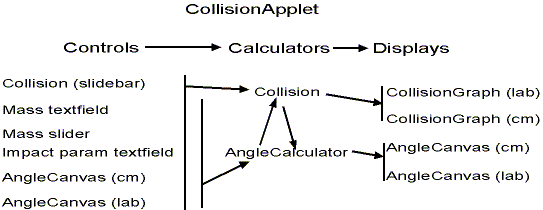

Notes on Collision Code
This applet has a lot of classes communicating even though
there isn't a lot of code. It might be helpful to describe it
here. I'll spare you the Booch treatment.
I'll start with visible classes, then show communications,
and finish with a laundry list of helper classes.
Visible Classes
- AngleCanvas
- An AngleCanvas has two jobs.
- It displays the relative position of two adjacent balls about
the center of mass. Here, it represents the balls at the moment of
impact. We display two AngleCanvases, but give each different information,
one for lab frame, one for center of mass frame.
- It is a type of control where the user can drag either ball in order
to change the impact parameter of the masses.
- CenteredRatioBar
- This custom scroll bar has a center position. It's value
changes exponentially as you move away from the center position.
We use it to change the mass ratio between mass 1 and mass 2.
- CollisionGraph
- This Canvas displays two balls and a center of mass marker.
It is told what the ball locations are and where they will collide
so it can draw the current locations and trails.
Two of these are instantiated, one for the Lab Frame, and one for the
Center of Mass Frame.
- Collision -- a slidebar
- This is the slider in-between the two CollisionGraphs. Changing
the slidebar changes the time. This class is much more than a control,
though. Because I figure the action of time is the nature
of the collision, it is this class that decides the current location
of the balls.
There are a few little classes like text fields,
but these are the main ones and the others fit in sensibly.
Communication
While a lot of messages occur, the principle is simple,
controls talk to calculators which talk to displays.

The two calculator classes are
- Collision
- Collision is active during a shot. It's Thread determines
the current location of the balls for both instances of CollisionGraph.
It also has static functions which will determine what happens
during a collision between two balls. It uses these
functions to determine where balls will be as a function of time.
While this object is a listener to all the controls, it doesn't need
to do any calculations until the moment the user hits the fire
button.
- AngleCalculator
- This object has to show the actual collision of the balls
at all times as a function of the mass ratio and impact parameter.
It has no effect on the moving balls during a collision but
controls the visible instances of AngleCanvas.
Helper Classes
- Class TurnedLabel
- This is simply a label on its side. You have to draw the label
to a backbuffer, then apply a rotation filter (RotFilter.class) to
the backbuffer, then display it.
- Class RotFilter
- Turns any image 90 degrees either direction. Much more efficient
code than using a general affine transformation class. See TurnedLabel
code to figure out how to use an image filter.
- Class DoubleTextField
- Simply a textfield that reads and displays double values.
This implements a classic Listener interface except that the
listener is a DoubleListener, shown below.
- Interface DoubleListener
- This interface is a promise to implement a SetValue(double,String)
method where the String is like an ActionCommand to identify who
is sending you the double.
- Interface CollisionColors
- In order to have better control over the applet colors,
I put them all into an interface, kind of like a header file.
That way, I can switch them in and out without rooting though
the text.
- Class Arrow
- A Polygon that looks like an Arrow. If anyone can make one
that looks like a real arrow at any angle, I'll give you ten dollars.
- Class MultiLineLabel
- Taken from part of an example the Nutshell Examples book. It's just
what it says it is. I only typed in the features I used.